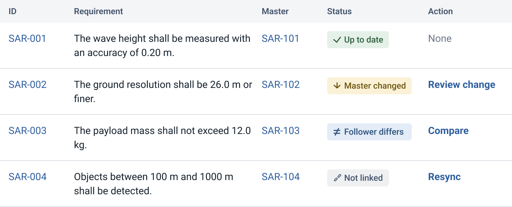

The screen
Project’s requirements table. Each row links a Follower to its Master.

| Status | Meaning | What the owner can do |
|---|---|---|
| Up to date | The Follower matches its Master. | None: Nothing to do. |
| Master changed | Someone edited the Master. | Review change: see old and new text, then apply or reject. |
| Follower differs | The Follower was edited, or a change was rejected. | Compare: see both versions, then keep the Follower or take the Master. |
| Not linked | The link to the Master was removed. | Resync: link it again. |
Role
As the only designer at Valispace at the time, I translated high-level concepts into designs from zero to one.
Problem
Requirement changes were noted in documents and shared in meetings or emails. Each copy in current projects was then updated by hand. This caused delays and misalignment.
Outcome
A Master requirement propagates changes to its linked Followers.
- Contract signedSix-figure development contract with a client.
- Shipped2021, live in Altium 365.

Process
I iterated hi-fi prototypes weekly with experts and users. Some internal experts had been users in similar setups. I separated personal preferences from improvements for each role across companies.
AI
During early discussions of AI in terms of UX, my first concern was transparency. Engineers need to see where AI was used. Formatting fixes and high-impact changes need different handling. AI never takes responsibility from the engineer.
Lessons
- Design filled the gap
Prototypes turned high level decisions into logic developers could build.
- Carried into the next feature
On the next feature, I asked for user stories and agreed must haves at the start. See Verification Assignment Matrix.